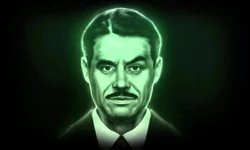
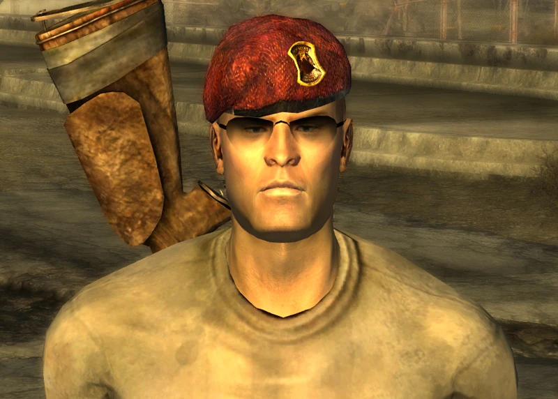
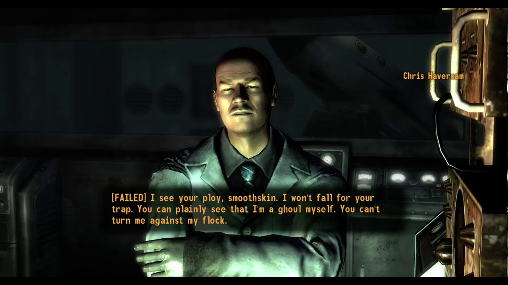
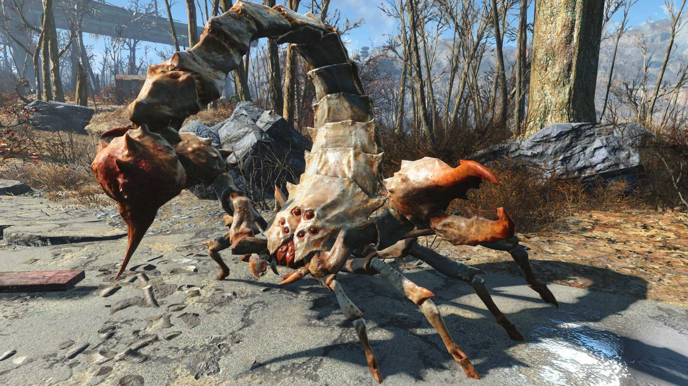

Benny
Most likely, we will not see Benny alive. If the Courier has any brains left after being shot in the head Benny is rotting somewhere in a corner of the Mojave. But maybe a backstory of his place as the head of the Chairman of New Vegas would be nice, or just a shot of his iconic black and white sport coat could be a fun nod to one of the main antagonists of the game.
Mr. House (Duh)
Anyone who has played New Vegas most likely knows Mr. House very well. In fact, he was already technically in the show as the CEO of ROB-CO while he and other corporate leaders were spitballing ideas of their own vault experiments. We can say with certainty that we will at least get a backstory of Mr. House and the Platinum Chip in season 2.
GoodSprings
Goodsprings is the first town you wake up in at the beginning of New Vegas after being treated by Doc Mitchell. It wouldn’t make a whole lot of sense for any of the same characters to still be there but that first walk out of the town's too iconic for so many players when starting their new journey. Not to mention it’s uncomfortably close to Deathclaw territory.
Craig Boone (or really any other companion)
I don’t know about you but Boone was my guy. One of the many companions you can get to follow you around the wasteland, Boone is a former NCR soldier that the Courier first meets at the T-rex in Novac and could be a great way to show the history of the New California Republic. He’s a great shot and never takes off his beret. There are also great companions like Lily, Raul, or the incredible Rex the Cyberdog. All of the companions would be great additions or cameos in the next season. We focus on Boone because he’s at a great age in New Vegas that would make him about middle aged for when the show gets to the Mojave. Boone especially hates Caesar’s Legion, speaking of which…
Caesar’s Legion
If you ever want a true chaotic evil run in Fallout: New Vegas look no further than Caesar’s Legion. They’re based off of the military of the Roman Empire, absolutely brutal and make a lasting impression anytime you meet them in the wasteland. Although Caesar himself is likely dead at this point the Legion could still live on in some way. Just be sure to win their lotteries.
That One Guy Who Thinks He’s A Ghoul - Chris Haversam
Probably one of the most memorable side quests in Fallout: New Vegas was at the REPCONN test site where you assist a group of ghouls launch a rocket to “the Far Beyond”. Among them is a human who speaks and acts like a ghoul but is in fact a smooth-faced human. He was left behind at the end of the quest or gets revenge on the ghouls who have been deceiving him (depending on what the Courier does) and could very well still be alive during season 2. Just imagine a scene where Cooper Howard meets Chris. It would be absolutely hilarious.
MORE WASTELAND CREATURES
The first season we only got a good look at a handful of the wasteland’s wildlife and it's already been confirmed that Deathclaws will make their official debut in season 2. Still, we’d like to see more of the smaller enemies like geckos, radscorpions, giant ants, bighorners and maybe a super mutant fighting a T60… if it’s not too much to ask…
No matter if they end up incorporating any old characters from the games we couldn’t be more hyped for season 2. It hasn’t been officially announced when season 2 will arrive but it will most likely be near the end of 2025.